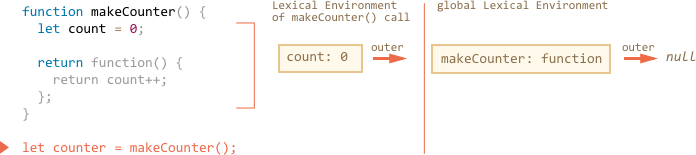
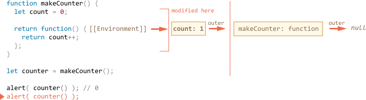

JavaScript is a very function-oriented language. It gives us a lot of freedom. A function can be created at one moment, then copied to another variable or passed as an argument to another function and called from a totally different place later.
We know that a function can access variables outside of it; this feature is used quite often.
But what happens when an outer variable changes? Does a function get the most recent value or the one that existed when the function was created?
Also, what happens when a function travels to another place in the code and is called from there – does it get access to the outer variables of the new place?
Different languages behave differently here, and in this chapter we cover the behaviour of JavaScript.
A couple of questions
Let’s consider two situations to begin with, and then study the internal mechanics piece-by-piece, so that you’ll be able to answer the following questions and more complex ones in the future.
-
The function
sayHiuses an external variablename. When the function runs, which value is it going to use?let name = "John"; function sayHi() { alert("Hi, " + name); } name = "Pete"; sayHi(); // what will it show: "John" or "Pete"?Such situations are common both in browser and server-side development. A function may be scheduled to execute later than it is created, for instance after a user action or a network request.
So, the question is: does it pick up the latest changes?
-
The function
makeWorkermakes another function and returns it. That new function can be called from somewhere else. Will it have access to the outer variables from its creation place, or the invocation place, or both?function makeWorker() { let name = "Pete"; return function() { alert(name); }; } let name = "John"; // create a function let work = makeWorker(); // call it work(); // what will it show? "Pete" (name where created) or "John" (name where called)?
Lexical Environment
To understand what’s going on, let’s first discuss what a “variable” actually is.
In JavaScript, every running function, code block, and the script as a whole have an associated object known as the Lexical Environment.
The Lexical Environment object consists of two parts:
- Environment Record – an object that has all local variables as its properties (and some other information like the value of
this). - A reference to the outer lexical environment, usually the one associated with the code lexically right outside of it (outside of the current curly brackets).
So, a “variable” is just a property of the special internal object, Environment Record. “To get or change a variable” means “to get or change a property of the Lexical Environment”.
For instance, in this simple code, there is only one Lexical Environment:

This is a so-called global Lexical Environment, associated with the whole script. For browsers, all <script> tags share the same global environment.
On the picture above, the rectangle means Environment Record (variable store) and the arrow means the outer reference. The global Lexical Environment has no outer reference, so it points to null.
Here’s the bigger picture of how let variables work:
Rectangles on the right-hand side demonstrate how the global Lexical Environment changes during the execution:
- When the script starts, the Lexical Environment is empty.
- The
let phrasedefinition appears. It has been assigned no value, soundefinedis stored. phraseis assigned a value.phraserefers to a new value.
Everything looks simple for now, right?
To summarize:
- A variable is a property of a special internal object, associated with the currently executing block/function/script.
- Working with variables is actually working with the properties of that object.
Function Declaration
Function Declarations are special. Unlike let variables, they are processed not when the execution reaches them, but when a Lexical Environment is created. For the global Lexical Environment, it means the moment when the script is started.
That is why we can call a function declaration before it is defined.
The code below demonstrates that the Lexical Environment is non-empty from the beginning. It has say, because that’s a Function Declaration. And later it gets phrase, declared with let:
Inner and outer Lexical Environment
During the call, say() uses an outer variable, so let’s look at the details of what’s going on.
First, when a function runs, a new function Lexical Environment is created automatically. That’s a general rule for all functions. That Lexical Environment is used to store local variables and parameters of the call.
Here’s the picture of Lexical Environments when the execution is inside say("John"), at the line labelled with an arrow:
During the function call we have two Lexical Environments: the inner one (for the function call) and the outer one (global):
- The inner Lexical Environment corresponds to the current execution of
say. It has a single variable:name, the function argument. We calledsay("John"), so the value ofnameis"John". - The outer Lexical Environment is the global Lexical Environment.
The inner Lexical Environment has the outer reference to the outer one.
When code wants to access a variable – it is first searched for in the inner Lexical Environment, then in the outer one, then the more outer one and so on until the end of the chain.
If a variable is not found anywhere, that’s an error in strict mode. Without use strict, an assignment to an undefined variable creates a new global variable, for backwards compatibility.
Let’s see how the search proceeds in our example:
- When the
alertinsidesaywants to accessname, it finds it immediately in the function Lexical Environment. - When it wants to access
phrase, then there is nophraselocally, so it follows theouterreference and finds it globally.

Now we can give the answer to the first question from the beginning of the chapter.
A function gets outer variables as they are now; it uses the most recent values.
That’s because of the described mechanism. Old variable values are not saved anywhere. When a function wants them, it takes the current values from its own or an outer Lexical Environment.
So the answer to the first question is Pete:
let name = "John";
function sayHi() {
alert("Hi, " + name);
}
name = "Pete"; // (*)
sayHi(); // PeteThe execution flow of the code above:
- The global Lexical Environment has
name: "John". - At the line
(*)the global variable is changed, now it hasname: "Pete". - When the function
say(), is executed and takesnamefrom outside. Here that’s from the global Lexical Environment where it’s already"Pete".
Please note that a new function Lexical Environment is created each time a function runs.
And if a function is called multiple times, then each invocation will have its own Lexical Environment, with local variables and parameters specific for that very run.
“Lexical Environment” is a specification object. We can’t get this object in our code and manipulate it directly. JavaScript engines also may optimize it, discard variables that are unused to save memory and perform other internal tricks, but the visible behavior should be as described.
Nested functions
A function is called “nested” when it is created inside another function.
It is easily possible to do this with JavaScript.
We can use it to organize our code, like this:
function sayHiBye(firstName, lastName) {
// helper nested function to use below
function getFullName() {
return firstName + " " + lastName;
}
alert( "Hello, " + getFullName() );
alert( "Bye, " + getFullName() );
}Here the nested function getFullName() is made for convenience. It can access the outer variables and so can return the full name.
What’s more interesting, a nested function can be returned: either as a property of a new object (if the outer function creates an object with methods) or as a result by itself. It can then be used somewhere else. No matter where, it still has access to the same outer variables.
An example with the constructor function (see the chapter Constructor, operator "new"):
// constructor function returns a new object
function User(name) {
// the object method is created as a nested function
this.sayHi = function() {
alert(name);
};
}
let user = new User("John");
user.sayHi(); // the method code has access to the outer "name"An example with returning a function:
function makeCounter() {
let count = 0;
return function() {
return count++; // has access to the outer counter
};
}
let counter = makeCounter();
alert( counter() ); // 0
alert( counter() ); // 1
alert( counter() ); // 2Let’s go on with the makeCounter example. It creates the “counter” function that returns the next number on each invocation. Despite being simple, slightly modified variants of that code have practical uses, for instance, as a pseudorandom number generator, and more. So the example is not as artificial as it may appear.
How does the counter work internally?
When the inner function runs, the variable in count++ is searched from inside out. For the example above, the order will be:
- The locals of the nested function…
- The variables of the outer function…
- And so on until it reaches global variables.
In this example count is found on step 2. When an outer variable is modified, it’s changed where it’s found. So count++ finds the outer variable and increases it in the Lexical Environment where it belongs. Like if we had let count = 1.
Here are two questions to consider:
- Can we somehow reset the
counterfrom the code that doesn’t belong tomakeCounter? E.g. afteralertcalls in the example above. - If we call
makeCounter()multiple times – it returns manycounterfunctions. Are they independent or do they share the samecount?
Try to answer them before you continue reading.
…
All done?
Okay, let’s go over the answers.
- There is no way. The
counteris a local function variable, we can’t access it from the outside. - For every call to
makeCounter()a new function Lexical Environment is created, with its owncounter. So the resultingcounterfunctions are independent.
Here’s the demo:
function makeCounter() {
let count = 0;
return function() {
return count++;
};
}
let counter1 = makeCounter();
let counter2 = makeCounter();
alert( counter1() ); // 0
alert( counter1() ); // 1
alert( counter2() ); // 0 (independent)Hopefully, the situation with outer variables is quite clear for you now. But in more complex situations a deeper understanding of internals may be required. So let’s dive deeper.
Environments in detail
Now that you understand how closures work generally, we can descend to the very nuts and bolts.
Here’s what’s going on in the makeCounter example step-by-step, follow it to make sure that you understand everything. Please note the additional [[Environment]] property that we didn’t cover yet.
-
When the script has just started, there is only global Lexical Environment:

At that starting moment there is only
makeCounterfunction, because it’s a Function Declaration. It did not run yet.All functions “on birth” receive a hidden property
[[Environment]]with a reference to the Lexical Environment of their creation. We didn’t talk about it yet, but that’s how the function knows where it was made.Here,
makeCounteris created in the global Lexical Environment, so[[Environment]]keeps a reference to it.In other words, a function is “imprinted” with a reference to the Lexical Environment where it was born. And
[[Environment]]is the hidden function property that has that reference. -
The code runs on, and the call to
makeCounter()is performed. Here’s a snapshot of the moment when the execution is on the first line insidemakeCounter():At the moment of the call of
makeCounter(), the Lexical Environment is created, to hold its variables and arguments.As all Lexical Environments, it stores two things:
- An Environment Record with local variables. In our case
countis the only local variable (appearing when the line withlet countis executed). - The outer lexical reference, which is set to
[[Environment]]of the function. Here[[Environment]]ofmakeCounterreferences the global Lexical Environment.
So, now we have two Lexical Environments: the first one is global, the second one is for the current
makeCountercall, with the outer reference to global. - An Environment Record with local variables. In our case
-
During the execution of
makeCounter(), a tiny nested function is created.It doesn’t matter whether the function is created using Function Declaration or Function Expression. All functions get the
[[Environment]]property that references the Lexical Environment in which they were made. So our new tiny nested function gets it as well.For our new nested function the value of
[[Environment]]is the current Lexical Environment ofmakeCounter()(where it was born):
Please note that on this step the inner function was created, but not yet called. The code inside
function() { return count++; }is not running, we’re going to return it. -
As the execution goes on, the call to
makeCounter()finishes, and the result (the tiny nested function) is assigned to the global variablecounter:
That function has only one line:
return count++, that will be executed when we run it. -
When the
counter()is called, an “empty” Lexical Environment is created for it. It has no local variables by itself. But the[[Environment]]ofcounteris used as the outer reference for it, so it has access to the variables of the formermakeCounter()call where it was created:
Now if it accesses a variable, it first searches its own Lexical Environment (empty), then the Lexical Environment of the former
makeCounter()call, then the global one.When it looks for
count, it finds it among the variablesmakeCounter, in the nearest outer Lexical Environment.Please note how memory management works here. Although
makeCounter()call finished some time ago, its Lexical Environment was retained in memory, because there’s a nested function with[[Environment]]referencing it.Generally, a Lexical Environment object lives as long as there is a function which may use it. And only when there are none remaining, it is cleared.
-
The call to
counter()not only returns the value ofcount, but also increases it. Note that the modification is done “in place”. The value ofcountis modified exactly in the environment where it was found.So we return to the previous step with the only change – the new value of
count. The following calls all do the same. -
Next
counter()invocations do the same.
The answer to the second question from the beginning of the chapter should now be obvious.
The work() function in the code below uses the name from the place of its origin through the outer lexical environment reference:

So, the result is "Pete" here.
But if there were no let name in makeWorker(), then the search would go outside and take the global variable as we can see from the chain above. In that case it would be "John".
There is a general programming term “closure”, that developers generally should know.
A closure is a function that remembers its outer variables and can access them. In some languages, that’s not possible, or a function should be written in a special way to make it happen. But as explained above, in JavaScript all functions are naturally closures (there is only one exclusion, to be covered in The "new Function" syntax).
That is: they automatically remember where they were created using a hidden [[Environment]] property, and all of them can access outer variables.
When on an interview, a frontend developer gets a question about “what’s a closure?”, a valid answer would be a definition of the closure and an explanation that all functions in JavaScript are closures, and maybe few more words about technical details: the [[Environment]] property and how Lexical Environments work.
Code blocks and loops, IIFE
The examples above concentrated on functions. But Lexical Environments also exist for code blocks {...}.
They are created when a code block runs and contain block-local variables. Here are a couple of examples.
If
In the example below, when the execution goes into if block, the new “if-only” Lexical Environment is created for it:

The new Lexical Environment gets the enclosing one as the outer reference, so phrase can be found. But all variables and Function Expressions declared inside if reside in that Lexical Environment and can’t be seen from the outside.
For instance, after if finishes, the alert below won’t see the user, hence the error.
For, while
For a loop, every iteration has a separate Lexical Environment. If a variable is declared in for, then it’s also local to that Lexical Environment:
for (let i = 0; i < 10; i++) {
// Each loop has its own Lexical Environment
// {i: value}
}
alert(i); // Error, no such variableThat’s actually an exception, because let i is visually outside of {...}. But in fact each run of the loop has its own Lexical Environment with the current i in it.
After the loop, i is not visible.
Code blocks
We also can use a “bare” code block {…} to isolate variables into a “local scope”.
For instance, in a web browser all scripts share the same global area. So if we create a global variable in one script, it becomes available to others. But that becomes a source of conflicts if two scripts use the same variable name and overwrite each other.
That may happen if the variable name is a widespread word, and script authors are unaware of each other.
If we’d like to avoid that, we can use a code block to isolate the whole script or a part of it:
{
// do some job with local variables that should not be seen outside
let message = "Hello";
alert(message); // Hello
}
alert(message); // Error: message is not definedThe code outside of the block (or inside another script) doesn’t see variables inside the block, because the block has its own Lexical Environment.
IIFE
In old scripts, one can find so-called “immediately-invoked function expressions” (abbreviated as IIFE) used for this purpose.
They look like this:
(function() {
let message = "Hello";
alert(message); // Hello
})();Here a Function Expression is created and immediately called. So the code executes right away and has its own private variables.
The Function Expression is wrapped with brackets (function {...}), because when JavaScript meets "function" in the main code flow, it understands it as the start of a Function Declaration. But a Function Declaration must have a name, so there will be an error:
// Error: Unexpected token (
function() { // <-- JavaScript cannot find function name, meets ( and gives error
let message = "Hello";
alert(message); // Hello
}();We can say “okay, let it be so Function Declaration, let’s add a name”, but it won’t work. JavaScript does not allow Function Declarations to be called immediately:
// syntax error because of brackets below
function go() {
}(); // <-- can't call Function Declaration immediatelySo, round brackets are needed to show JavaScript that the function is created in the context of another expression, and hence it’s a Function Expression. It needs no name and can be called immediately.
There are other ways to tell JavaScript that we mean Function Expression:
// Ways to create IIFE
(function() {
alert("Brackets around the function");
})();
(function() {
alert("Brackets around the whole thing");
}());
!function() {
alert("Bitwise NOT operator starts the expression");
}();
+function() {
alert("Unary plus starts the expression");
}();In all the above cases we declare a Function Expression and run it immediately.
Garbage collection
Lexical Environment objects that we’ve been talking about are subject to the same memory management rules as regular values.
-
Usually, Lexical Environment is cleaned up after the function run. For instance:
function f() { let value1 = 123; let value2 = 456; } f();Here two values are technically the properties of the Lexical Environment. But after
f()finishes that Lexical Environment becomes unreachable, so it’s deleted from the memory. -
…But if there’s a nested function that is still reachable after the end of
f, then its[[Environment]]reference keeps the outer lexical environment alive as well:function f() { let value = 123; function g() { alert(value); } return g; } let g = f(); // g is reachable, and keeps the outer lexical environment in memory -
Please note that if
f()is called many times, and resulting functions are saved, then the corresponding Lexical Environment objects will also be retained in memory. All 3 of them in the code below:function f() { let value = Math.random(); return function() { alert(value); }; } // 3 functions in array, every one of them links to Lexical Environment // from the corresponding f() run // LE LE LE let arr = [f(), f(), f()]; -
A Lexical Environment object dies when it becomes unreachable: when no nested functions remain that reference it. In the code below, after
gbecomes unreachable, thevalueis also cleaned from memory;function f() { let value = 123; function g() { alert(value); } return g; } let g = f(); // while g is alive // there corresponding Lexical Environment lives g = null; // ...and now the memory is cleaned up
Real-life optimizations
As we’ve seen, in theory while a function is alive, all outer variables are also retained.
But in practice, JavaScript engines try to optimize that. They analyze variable usage and if it’s easy to see that an outer variable is not used – it is removed.
An important side effect in V8 (Chrome, Opera) is that such variable will become unavailable in debugging.
Try running the example below in Chrome with the Developer Tools open.
When it pauses, in the console type alert(value).
function f() {
let value = Math.random();
function g() {
debugger; // in console: type alert( value ); No such variable!
}
return g;
}
let g = f();
g();As you could see – there is no such variable! In theory, it should be accessible, but the engine optimized it out.
That may lead to funny (if not such time-consuming) debugging issues. One of them – we can see a same-named outer variable instead of the expected one:
let value = "Surprise!";
function f() {
let value = "the closest value";
function g() {
debugger; // in console: type alert( value ); Surprise!
}
return g;
}
let g = f();
g();This feature of V8 is good to know. If you are debugging with Chrome/Opera, sooner or later you will meet it.
That is not a bug in the debugger, but rather a special feature of V8. Perhaps it will be changed sometime. You always can check for it by running the examples on this page.
Comments
<code>tag, for several lines – use<pre>, for more than 10 lines – use a sandbox (plnkr, JSBin, codepen…)